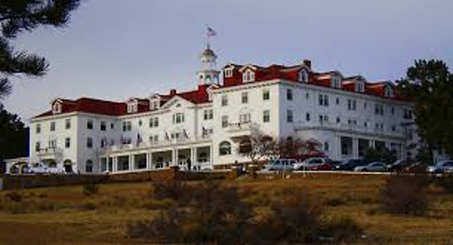
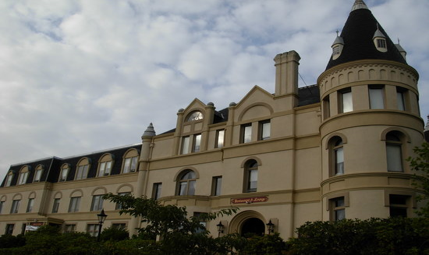
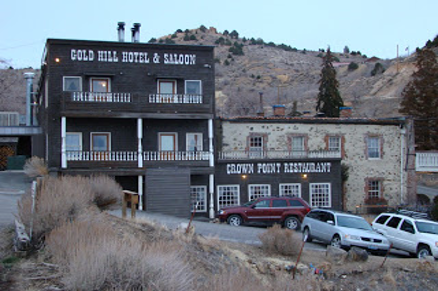
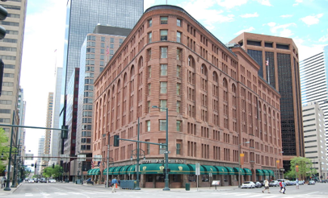

The Stanley Hotel | 3-Star Hotel | (970)-577-4000
Based on a one night stay for two on January 9th, 2019
Hotel Rates
1 Queen Bed
1 King Bed
1 Deluxe King bed
$229
$249
$269
The Stanley Hotel was originally opened in 1909, by Massachusetts couple F.O. and Flora Stanley, as a secluded, grand mountain resort. Though the Stanley's have passed, many believe they never actually left. Mr. Stanley has been reported as hovering behind employees at the reception desk, and Mrs. Stanley can still be heard playing piano in the hotel's music room. Haunted events have been recorded at this hotel from as far back as 1911, when Ms. Elizabeth Wilson, a housekeeper, was electrocuted during a lightening storm. Though she wasn't killed the room where it happened, Room 217, has become a hotbed of paranormal activity. every single room in the hotel has experienced something strange, from clothes being mysteriously unpacked, to items moving on their own, and lights turning themselves on and off. The fourth floor is often filled with the spectral laughter of children giggling and running down the halls. Author, Stephen King, checked into the hotel in 1973, for a one-night stay with his wife in Room 217 and were the only guests that night. The Shining, was inspired by these events and the overall experience of being secluded in the grand resort hotel alone. For just $50 you can take part in a 5-hour ghost hunt at the hotel, led by a paranormal investigator. The Stanley has a resident psychic, Madame Vera and a professional paranormal investigator on staff, Callea Seck. Was on The travel Channel's "Ghost Hunters" and Syfy's "Ghost Adventurers".
Manresa Castle
Port Townsend, Washington

The Manresa Castle | 3-Star Hotel |(360) 385-5750
Based on a one night stay on January 9th, 2019
Hotel Rates
1 Queen Bed
1 King Bed
2 Deluxe Queen Bed
$75
$85
$129
The Castle was completed in 1892, as the home of Charles and Kate Eisenbeis. Eisenbeis built what was the largest private residence ever built in Port Townsend, consisting of 30 rooms. Charles died in 1902 and Kate remarried a few years later. The Castle was left empty for almost 20 years except for a caretaker. In 1925, a Seattle attorney bought the Castle as a vacation place for nuns teaching in Seattle schools. Eventually the castle was refurbished as a hotel. There have bee reports that rooms 302, 304 , and 306 are haunted, and that two ghost haunt the premise . A monk hung himself in the attic and sometimes people hear footsteps walking above them, but there is no one in the attic. The other ghost is a young lady who had been waiting for her beloved to return from war. After hearing of his demise, she threw herself out her window. Also, In the chapel/café, drinking glasses are know to explode, even when in one server's hand. The hotel has on an episode of "Ghost Adventures" and has been in a few small investigations.
Gold Hill Hotel
Virginia City, Nevada

The Gold Hill Hotel | 2-Star Hotel |(775) 847-0111
Based on a one night stay on January 9th, 2019| *ADA Compliant
Hotel Rates
Historic Balcony Room
Queen Rooms
king Rooms
$75
$100
$140
The Gold Hill hotel was formally known as The Riesen House back in 1861. The Gold Hill featured the earliest hotel rooms in the State of Nevada. Their hotel features the only full-service hotel in the Virginia City area and is also near a train service that will take you to Virginia City, which is nice to avoid the small amount of parking available. In 1869, there was a horrible fire that broke out in The Gold Hill Mines. 37 miners went down that day and none of them came back out. Due to this, some deem the hotel to be very haunted and many claim to hear pickaxes clanking at night in the miners Cabin room. Unfortunately, this room isn't occupied by friendly ghosts as things often get broken or thrown and whispers of threats are said at night. Two of the rooms "Rosie's Room" #4 and "William's Room" #5 are the hotels big haunt spots. Room 4 is rumored to be haunted by the night lady, "Rosie", who always smelled like heavy rose scented perfume. Many guests complain of an overwhelming smell of roses and scented objects being moved around. In room 5, William haunts. He smells of old cherry pipe tobacco and likes to play tricks. He's constantly playing with the keys, shaking the bed, and turning the lights on and off. The Hotel has been featured on the TV show "Ghost Adventurors".
The Brown Palace
Denver, Colorado

The Brown Palace| 4-star hotel | (303) 297-3111
Based on a one night stay on January 9th, 2019
Hotel Rates
1 Queen Bed
1 King Bed
Top Floor 1 King Bed
$149
$189
$209
In the year of 1892, Henry Brown opened the hotel. Throughout the history of the building, it was never closed for business. However, it has been renovated numerous times. The Brown Palace Hotel & Spa offer comfortable rooms and luxurious rooms. All rooms have exquisite furnishings and the hotel is also the only Denver hotel which has been included in the Forbes Four-Star and AAA Four-Diamond Hotel list. There are currently 241 guest rooms and suites. Room 904 is an interesting room however. One night the hotel switchboard began getting calls from room 904. When the operator answered, there was only static on the line. The most surprising thing about that was that the room had been stripped of all lights, wallpaper, carpet, furniture and telephones as it was being renovated. The hotel's dining room was originally known as the San Marco Room. It was the home of big bands and the San Marco Strings. One evening a man went to the dining room to investigate sounds coming from there. Upon entering the room he saw a quartet of musicians dressed formally and in the process of practicing. The houseman said that they had to leave, and the quartet answered, "We live here. Don't worry". An engineer who was on night duty also saw the ghost of a man who was dressed in an old-fashioned uniform of train conductors. The ghost slowly disappeared through the wall.